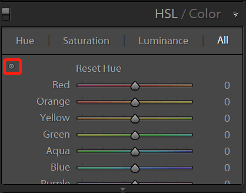
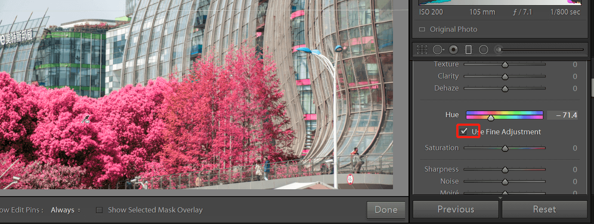

这篇文章上次修改于 889 天前，可能其部分内容已经发生变化，如有疑问可询问作者。

在 lightroom 中想要改变一个颜色的色相，最简单的方法就是在 hue panel 来处理：

通过移动某个颜色的滑块来改变这一颜色的色相，或者点击左上方的按钮，然后在图片中拖动来直接修改当前区域的色相。同理也可以修改饱和度和亮度。
这里介绍另一种通过 graduated filter 工具来处理，控制自由度更大，可以设定颜色影响的范围，也可以调节修改部分的亮度清晰度等信息。
develop 里，最上方找到方形的工具就是 graduated filter：
它可以用直线将图片分割成两部分，一侧为保护区域一侧为修改区域，中间为过度区域。常用来单独处理天空和地面的亮度等。快捷键 O 查看修改区域的范围，红色部分为影响区域：
这里我们实验修改下方树木的颜色。
在下方找到 range mask，切换到 color，这就代表在当前选区下再次匹配特定颜色缩小范围：
点击左侧吸管，在图片内找到树木区域通过点击或者拖拽来选取颜色：
拾取颜色后调节 amount 来控制选区范围，如果看不到选区范围，按快捷键 O：
选区范围完成后，按 O 取消选区显示，调节上方 hue 滑块修改颜色，点击下方的 use fine adjustment 可以精细调节色相：

和其他 filter 一样，可以调节白平衡，亮度，对比度等各种参数来精细控制区域的效果：
以上就是通过使用 graduated filter 处理特定颜色的区域的过程。
没有评论